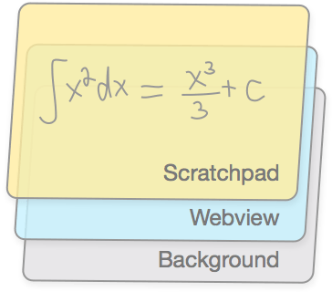
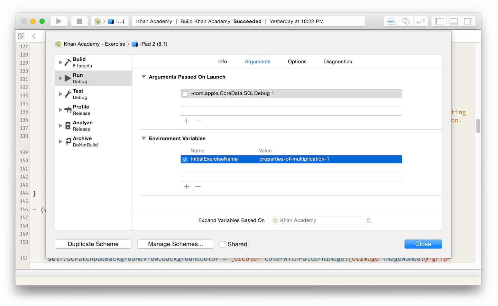
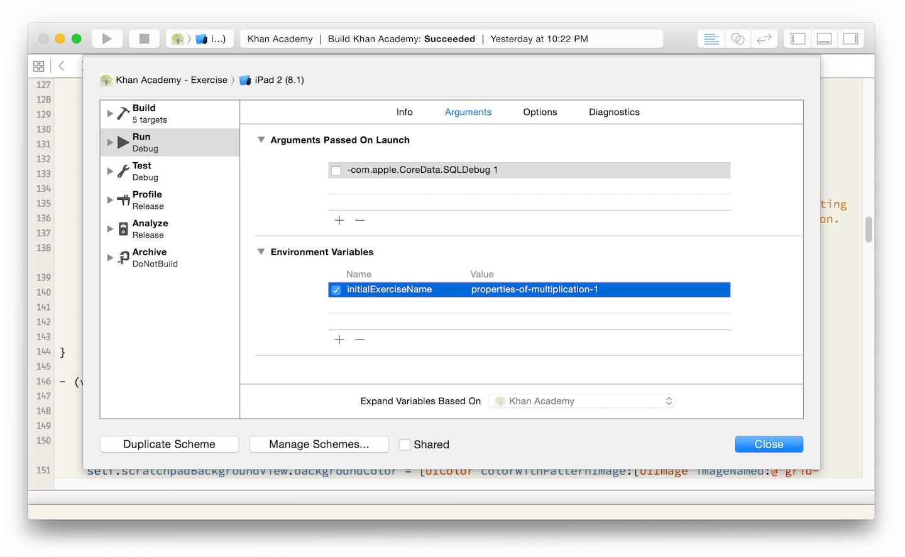

My summer at Khan Academy
I've spent the past few months at Khan Academy as an engineering intern on the iOS team, helping bring all the interactive exercises to the iPad app. As my internship comes to an end, I've compiled a list of the projects I worked on.
This post will mainly focus on the end result of my projects. I'll write more on some of the implementation details in the future.
A little background about me: I'm a CS major at the University of Toronto, going into my final year. Before Khan Academy, I interned at Mixpanel and Optimizely.
Contents
Related videos
Each exercise on Khan Academy has associated videos that cover the relevant skills for that exercise. My first project was to add these related videos to the exercise screen of the app.
I worked with Marcos to iterate on different interactions. We started with a video thumbnail that could be dragged up to start playing the video, like the YouTube app.
The first iteration kept the video on a fixed track, using the touch y-coordinate to interpolate the position on the track. This felt awkward if you didn't drag along the path since your finger's movement would be disconnected from the movement of the video.
We realized it would be a waste of screen space to have the thumbnail always on screen, especially since a lot of our thumbnails are black rectangles with a few scribbles.
Ultimately, we decided that the video should have three states: hidden, maximized, and docked. The docked state would play the video in the corner of the screen, allowing the user to interact with the exercise while watching the video.
You can switch videos by scrolling sideways when the video is maximized.
This version allowed the docked video to be placed anywhere on the bottom of the screen. We ended up pinning the docked video to the bottom right to make it more consistent.
Ended up using POP to animate the view. Three phantom UIViews define the position and dimensions for the maximized, minimized, and docked states. They're positioned using Auto Layout.
Scratchpad
Largest project. Goal: let students do scratch work right on the device, instead of getting a pen and paper.
Background info: app architecture: exercises rendered in web view, with native chrome. The scratchpad should be native.
More background info: exercises have interactive components.

Hit testing in the webview attempts. e.preventDefault(). Issues with that. Final solution: async hit test, forward compatible when we switch to WKWebView.
Two finger scrolling: human fingers are not very precise. Have to cancel drawing if second finger shows up within a threshold. Shoutout to Matt Drance for helping with this.
Shoutout to Andy for improving inking.
Flow
Healthy hackathon project. How can we make the iteration of interactive designs easier (see related videos).
Got to play with React. Immutable app architecture.
Other things…
UIWebView → WKWebView
Launch to exercise
I added a way to go directly to a specific exercise when running the app from Xcode. A simple change, but one that saved a lot of time. Before, we would launch the app and either browse to an exercise (at least 5 taps) or search for an exercise (2 taps + 5 keystrokes).
It uses a custom scheme that sets an environment variable indicating the exercise to load on launch.
 

Feedback form
UITextView is broken. Form sheet view controllers are frustrating.
animation.js + scrolling.js
jQuery scrolling is broken on iOS if you try to scroll x and y simultaneously. I wrote a simple `requestAnimationFrame` wrapper that scrolls the webview. It's interruptible. Code is on GitHub.
Thank you!
I've had an great summer and it's thanks to everyone at Khan Academy. An extra special thank you to the iOS team:
- Mike Parker — my mentor ★
- Laura Savino
- Andy Matuschak
- Marcos Ojeda
And thank you for reading this! See ya later.
— @kasrak